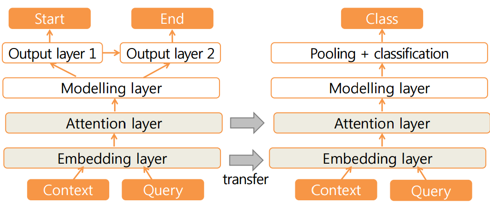
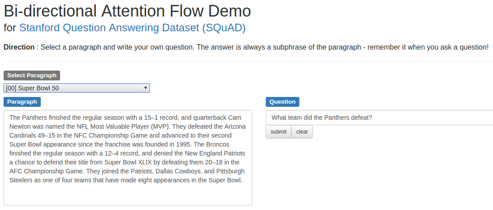
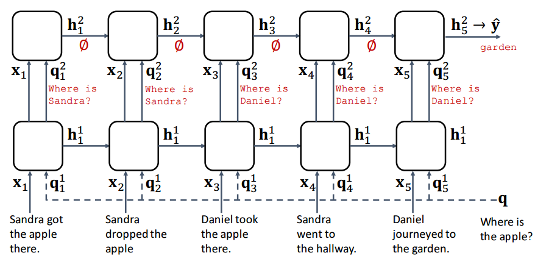

Sewon Min
+82-10-6771-0920
Bongcheon-dong, Gwanak-gu
Seoul, Korea
Hello!
I study artificial intelligence. In particular, I aim to create a system that is capable of human-level understanding of natural language.
I am highly motivated to learn and study more!
- I will be interning at Salesforce Research (Palo Alto) starting November. I will join in Einstein Team.
- I am looking for a Ph.D. position starting 2018. My doctoral study is expected to be fully supported by Korea Foundation for Advanced Studies (KFAS).
Education
Seoul National University 2014.03 - Current
I am currently a 4th year undergraduate. (Graduation: 2018.08 Expected)
- Major: Computer Science and Engineering
- GPA: 4.11/4.30 (total) 4.18/4.30 (major only)
- Course details in Courses Section.
University of Washington 2016.09 - 12
I was an exchange student in the fall quarter of 2016.
Gyeonggi Science High School 2011.03 - 2013.02
It is a special-purposed high school for students interested in math and science.
Experience
University of Washington 2016.10 - 2017.02
I was an undergraduate research intern during my exchange program, advised by Hannaneh Hajishirzi and Ali Farhadi. A special thanks to my mentor Minjoon Seo.
- Published 2 papers in ICLR 2017 and ACL 2017, and expected to submit 1 paper in ICLR 2018.
- Some technical works including making a demo page.
- Details in Research Section.
Seoul National University 2016.07 - 08
I was an undergraduate intern during summer, in Vision&Learning Lab, advised by Gunhee Kim.
- Worked on image captioning (generating sentence given an image) as an Industrial-University Cooperation. Used a model from Show, Attend and Tell.
Seoul National University 2016.02 - 06
I participated in Undergraduate Research Opportunity Program, advised by Sang-gu Lee.
- Worked on entity linking from Tweets to Wikipedia article.
Publication
- Sewon Min, Minjoon Seo, Hannaneh Hajishirzi. "Question Answering through Transfer Learning from Large Fine-grained Supervision Data". In: Proceedings of ACL. 2017. [paper] [poster] [details]
- Minjoon Seo, Sewon Min, Ali Farhadi, Hannaneh Hajishirzi. "Query-Reduction Networks". In: Proceedings of ICLR. 2017. [paper] [code] [details]
Honorship
- Doctoral Study Abroad Program Scholarship granted by Korea Foundation for Advanced Studies (KFAS), awarded to qualified students to complete their doctorates. 2018 - 2023 (Expected)
- Google Travel Grants for attending ACL 2017. 2017.07
- Samsung Convergence Software Course Mentor Scholarship 2017.03 - 06
- Full Scholarship for all semesters attended (merit-based) 2014 - 2017
Interest
I am interested in proposing well-defined tasks toward natural language understanding, and designing systems and learning algorithms to address challenges. Some topics of interest are as follows.- Question answering, Machine Comprehension (Context-based QA, Open-domain QA)
- Generation of natural language
- Learning algorithms, Unsupervised learning and transfer learning
- Computer Vision (Interaction between natural language and visual data)
Neural Speed Reading 2017
- I am participating in Neural Speed Reading project led by Minjoon Seo.
Open-domain Question Answering 2017
- I participated in OpenQA project led by Minjoon Seo.
- We had a hierarchical structure for retrieving relevant documents from Wikipedia, selecting relevant paragraphs and run QA model.
- It indicates that there are still challenges to deal with open-domain question answering. Further study is needed for scalable question answering.
Transfer Learning in Question Answering ACL 2017
- Sewon Min, Minjoon Seo, Hannaneh Hajishirzi. "Question Answering through Transfer Learning from Large Fine-grained Supervision Data". In: Proceedings of ACL. 2017. [paper] [poster]
- We show that the task of question answering can significantly benefit from the transfer learning of models trained on a different large, fine-grained QA dataset (SQuAD). We demonstrate that not only large scale but also finer supervision enables the model (BiDAF) to better learn lexical and syntactic information.
- We achieve the state of the art in two well-studied QA datasets, WikiQA and SemEval-2016 (Task 3A) as well as an entailment task (SICK), through a transfer learning from SQuAD. For WikiQA, our model outperforms the previous best model by more than 8%.
- Since our work was done on specific model (BiDAF) and specific datasets, further study is needed to extend this technique to general tasks, allowing extensive use of the transfer learning in natural language processing.
BiDAF Demo 2016
- I made an interactive demo of context-aware question answering. [demo page] [demo code]
- Use BiDAF (Bi-directional Attention Flow) model. [BiDAF webpage]
Query-Reduction Network ICLR 2017
- Minjoon Seo, Sewon Min, Ali Farhadi, Hannaneh Hajishirzi. "Query-Reduction Networks". In: Proceedings of ICLR. 2017. [paper] [code]
- Query-Reduction Network (QRN) is a variant of RNN that effectively handles both short-term and long-term sequential dependencies to reason over multiple facts. QRN considers the context sentences as a sequence of state-changing triggers, and reduces the original query to a more informed query as it observes each trigger (context sentence) through time.
- My work: I evaluated QRN; I applied it to question answering (with bAbI QA 10K dataset) and dialog generation (with bAbI dialog & DSTC2 dataset), with a slight modification of an output module for dialog. We achieve the state of the art results in all datasets.
Interesting Courses
- Stanford CS231n and CS224d were available online; I was highly motivated by these lectures.
- Logic Design and Data Structure helps me to get a good grasp of the basics in computer science. Programming Language, Automata Theory and Operating System were some unforgettable lectures.
- Intro. to Mathematical Analysis (I) was one of challenging & exiting lectures.
- CSE544 (Priciple of DBMS), CSE517(Natural Language Processing) in University of Washington were a great opportunity to study and work on a project with graduate students.
Full Courses
- Major (upper) Programming language, Intro. to machine learning, Database, Automato Theory, Intro. to data mining, Operating systems, Human-computer interaction, Creative integrated design, Engineering research practice
- Major (others) Logis Design & its lab, Computer programming, Data structures, Discrete Mathematics, IT-leadership Seminar, Electrical and electronic circuits, Computer engineering seminar, Principles of programming, Computer Architecture, Algorithms
- Mathematics Caculus 1&2, Engineering Mathematics 1&2, Intro. to Mathematical Analysis 1, Linear and non-linear computation models
- Liberal (science) Statistics & its lab, Physics 1&2 & their labs, Chemistry & its lab, Digital computer concepet and practice
- Liberal (others) College Writing (Korean), College English I, Understanding Korean Contemporary History, Intro. to Psychology, Psychology of interpersonal relations, Understanding drama, Intro. to Industrial engineering, Freshman Seminars
- Courses at University of Washington Web programming, Principle of DBMS, H-Senior Project